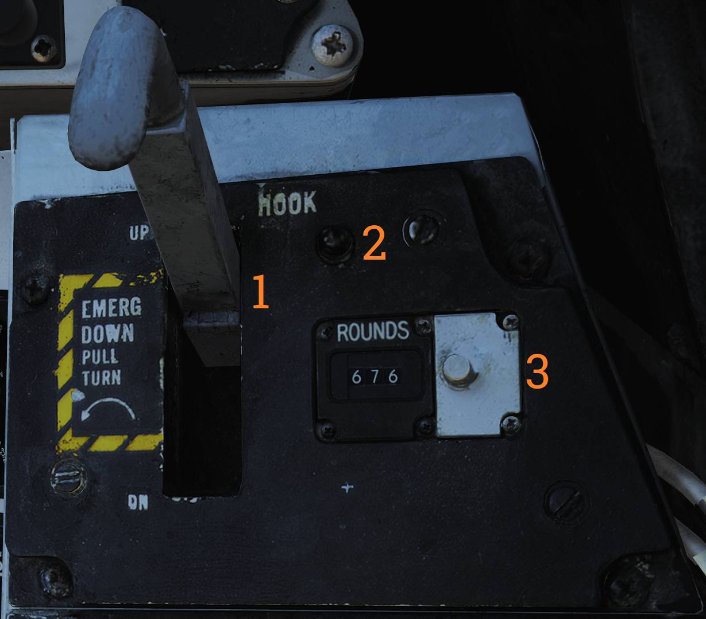
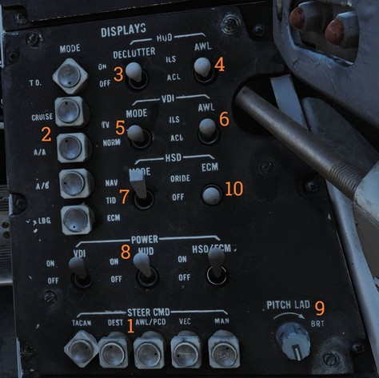

Right Vertical Console
Arresting Hook Panel

Panel controlling arresting hook operation.
Hook Handle
The HOOK handle (
- UP - Electrically commands hydraulic retraction of the hook and locks it in the up-lock.
- DOWN - Electrically releases hydraulic pressure, allowing the hook to extend by dashpot pressure and gravity.
- EMERG DOWN - When the handle is pulled and rotated counter-clockwise, the hook is mechanically released for emergency extension.
Hook Transition Light
The hook transition light (
The light will not extinguish until the hook is fully extended and may remain illuminated during high-speed extension due to hook blowback.
Rounds Remaining Counter
The rounds remaining counter (
The counter normally counts down from 676 rounds and may be manually reset to a desired value using the adjustment knob on the right side.
Displays Control Panel

💡 Image shows an F-14A with AN/ALR-45 having a third option on the HSD MODE and an ECM ORIDE which are not functional but are present in some aircraft with the AN/ALR-67.
Control panel for front cockpit display configuration.
Steering Command Selectors
The STEERING CMD selectors (
The selectors are mutually exclusive and rotate to indicate the active selection.
- TACAN - TACAN provides steering information.
- DEST - Steering commands based on the RIO-selected waypoint.
- AWL/PCD - Selects glideslope guidance (ILS or ACLS) for landing or PCD steering for air-to-ground delivery.
- VEC - Data link vector steering commands.
- MAN - Manual course and heading steering.
Mode Selectors
The MODE selectors (
Selectors are mutually exclusive and rotate to indicate the selected mode.
- T.O. - Takeoff mode.
- CRUISE - Cruise mode.
- A/A - Air-to-air mode.
- A/G - Air-to-ground mode.
- LDG - Landing mode.
HUD Declutter Switch
The HUD DECLUTTER switch (
HUD AWL Switch
The HUD AWL switch (
- ILS - ILS is used as the AWL source.
- ACL - ACLS is used as the AWL source.
VDI Mode Switch
The VDI MODE switch (
- TV - Displays video from TCS or LANTIRN.
- NORM - Displays the standard VDI presentation.
VDI AWL Switch
The VDI AWL switch (
- ILS - ILS-based AWL information.
- ACL - ACLS-based AWL information.
HSD Mode Switch
The HSD MODE switch (
- NAV - Navigation display showing steering information based on selected steering command source.
- TID - Repeats the RIO Tactical Information Display. If the RIO TID is set to TV, the display will be blank.
- ECM - Displays ECM information from AN/ALR-45 and AN/ALR-50 (F-14A with AN/ALR-45/50 only).
Display Power Switches
The POWER switches (
Pitch Ladder Brightness Knob
The PITCH LAD BRT knob (
HSD ECM Override Switch
The HSD ECM ORIDE switch (
- ORIDE - Allows ECM override.
- OFF - Prevents ECM override.
Only functional in aircraft equipped with the AN/ALR-45/50.
Elevation Lead Panel

The elevation lead panel (
Adjustment range is from −263 to +87 mils.